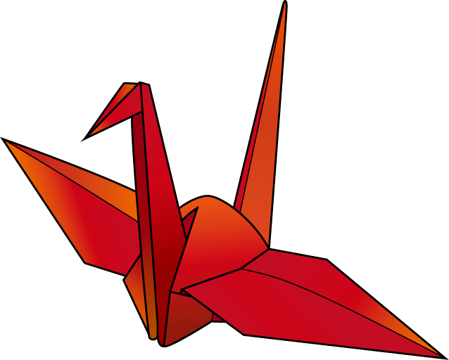

There were many uncertainties throughout my life, but one thing remained a constant: I will pursue STEM. My interests in engineering sprouted from my obsession with origami. It all starts with a square piece of paper. Having the means to create and transform it into art was truly marvelous. Origami taught me patience and passion for craft. It became my outlet for expression. Fascinated by the inventive nature of origami, I looked towards engineering as a place to transfer this outlet.
Although I was certain in pursuing STEM, I wasn’t sure where to go. A four year STEM curriculum at my high school provided me with many opportunities to explore my interest. During my STEM capstone project, I took a glimpse into programming. I helped program an air particle sensor to record data onto a spreadsheet. Despite its simplicity, I was so immersed in the concept of code, how simple lines of code could breathe life into the sensor. During my time in AP CS, I cherished the ‘aha’ moments experienced after finally getting the right output; programming felt intensely rewarding. These ever-present feelings compel me to pursue a career in software engineering.
I view software engineers as artists who display their craft through innovative solutions. They share their craft with vast networks of people to solve real-world challenges. Software is beautiful; it’s a universal thing that makes society efficient and elegant. Just as I carefully prepare each fold to create intricate shapes, a software engineer meticulously codes, tests, and refines to develop complex software systems. I hope to hone my craftsmanship by developing the creative and critical-thinking skills needed for software engineering. I wish to share my craft in the future. Also, I hope to develop crucial teamwork skills in ICS314 when working in groups. Doing so will make future cooperation meaningful.